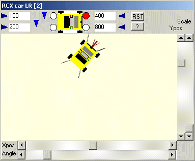

December 2002
JALss, RCX car with Left/Right motor
|
This device simulates an RCX with a left and right motor, driving around in a room. It has 2 front bumpers and 2 rear bumpers. By connecting the 2 motors to the virtual RCX, the car can be controlled by the virtual RCX, which can be controlled by a program or directly by the tools of Bricxcc. When one of it bumpers touches a wall, the corresponding ligth will color red and a resistor is connected to ground (you can edit the value of each resistor). By connecting the bumper outputs to the sensor inputs of the virtual RCX, you can test a program running in the virtual RCX. Also the motors will draw more power, which can be seen in the internal motor signals of the viryual RCX. With the sliders Xpos, Ypos and Angle you can set the initial and current location and orientation of the car. With the Scale slider you can scale the RCX to get a bigger or smaller room. The color of the background can be changed by clicking with the right-mouse button on the background. You can change the image of the car by substituting another image for "rcx5.bmp" (in the main JALss directory) Help button, shows this page. RST button does nothing at the moment. |
 Technical: This device is totally programmed as a DLL. You can find the Delphi source code here: DLL_dev_RCX_car_LR.pas and DLL_dev_RCX_car_LR.dfm Normal motor resistance is 80 Ohm, when bumping the resistance drops to 50 Ohm. |